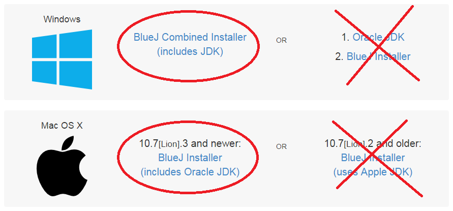

Since Java is cross-platform you may also install it on your home computer.
On the homepage there will be options to download installers for BlueJ. You must make sure that you download the COMBINED INSTALLER. It comes with both the BlueJ program and the Java Development Kit that we need.

After it downloads, run the installer and follow the instructions to install. After that, make sure that it works properly by running the HelloWorld program.